Complete · 2026-11-15T07:39:25.468047+00:00
Smart: DeepSeek high, no explicit planning. Frontier: Sol high with planning. Both have 20 VISTA views and identical hybrid D-FINE/Argon counting tools. No dedicated OCR.
Count accuracy is exact; measurement thresholds are relative error. Fixed denominators include reviews, failures and unfinished cases.
| Route | Task | Complete | Answered | Exact | ≤2% | ≤5% | ≤10% | Median sec |
|---|---|---|---|---|---|---|---|---|
| smart | all | 25/25 | 22 | 8 | 13 | 18 | 19 | 65.3 |
| smart | count | 10/10 | 8 | 5 | 5 | 5 | 5 | 256.7 |
| smart | area | 5/5 | 4 | 2 | 2 | 3 | 4 | 60.0 |
| smart | length | 5/5 | 5 | 0 | 1 | 5 | 5 | 30.6 |
| smart | volume | 5/5 | 5 | 1 | 5 | 5 | 5 | 51.0 |
| frontier | all | 25/25 | 20 | 10 | 15 | 19 | 19 | 47.8 |
| frontier | count | 10/10 | 8 | 7 | 7 | 7 | 7 | 124.6 |
| frontier | area | 5/5 | 2 | 2 | 2 | 2 | 2 | 35.6 |
| frontier | length | 5/5 | 5 | 0 | 1 | 5 | 5 | 27.5 |
| frontier | volume | 5/5 | 5 | 1 | 5 | 5 | 5 | 37.3 |
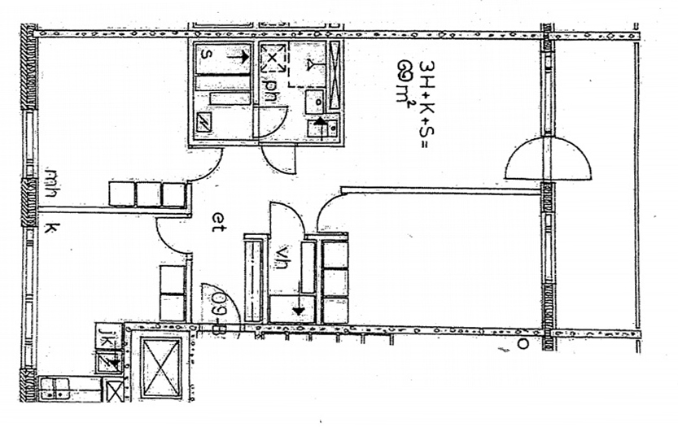
smart · needs_review · None count · reference 8 count · basis accepted_specialist_proposals · service-result.json | transcript.json | request-manifest.json
frontier · answered · 8 count · reference 8 count · basis accepted_specialist_proposals · service-result.json | transcript.json | request-manifest.json
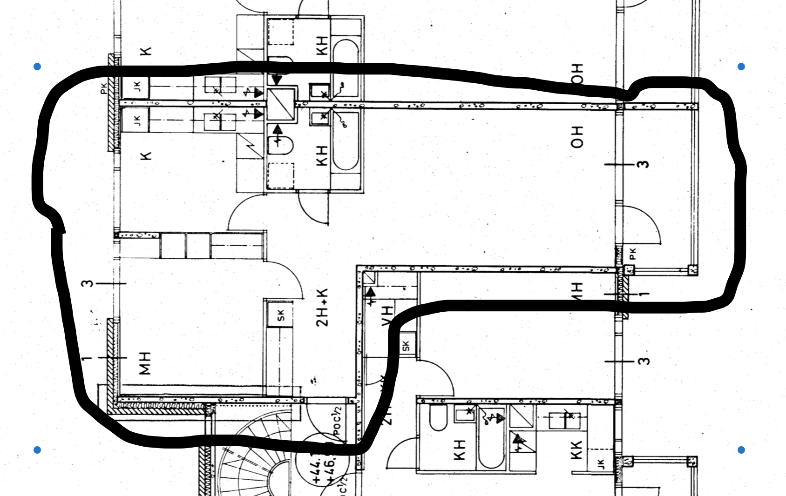
smart · answered · 6 count · reference 3 count · basis accepted_specialist_proposals · service-result.json | transcript.json | request-manifest.json
frontier · needs_review · None count · reference 3 count · basis accepted_specialist_proposals · service-result.json | transcript.json | request-manifest.json
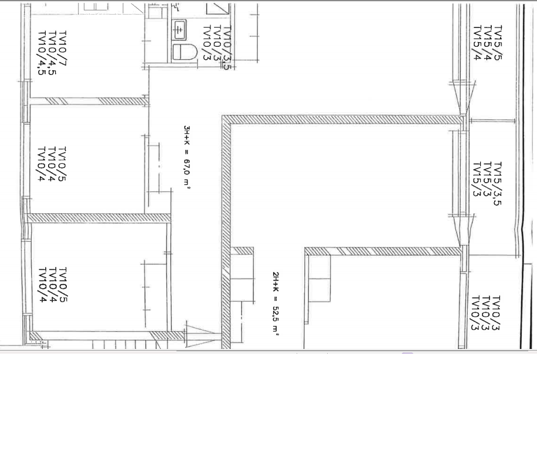
smart · answered · 1 count · reference 1 count · basis accepted_specialist_proposals · service-result.json | transcript.json | request-manifest.json
frontier · answered · 1 count · reference 1 count · basis accepted_specialist_proposals · service-result.json | transcript.json | request-manifest.json
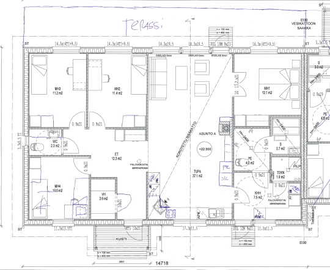
smart · answered · 2 count · reference 2 count · basis accepted_specialist_proposals · service-result.json | transcript.json | request-manifest.json
frontier · answered · 2 count · reference 2 count · basis accepted_specialist_proposals · service-result.json | transcript.json | request-manifest.json
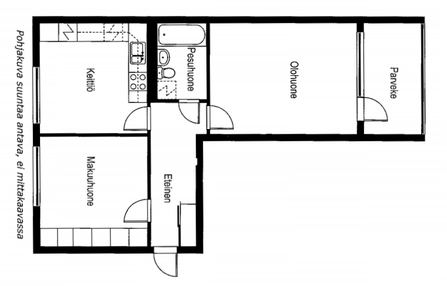
smart · answered · 2 count · reference 1 count · basis accepted_specialist_proposals · service-result.json | transcript.json | request-manifest.json
frontier · answered · 1 count · reference 1 count · basis accepted_specialist_proposals · service-result.json | transcript.json | request-manifest.json
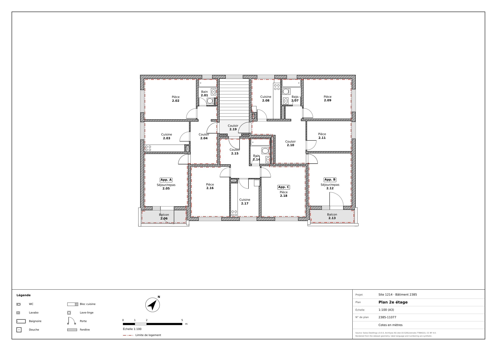
smart · answered · 18 count · reference 23 count · basis accepted_specialist_proposals · service-result.json | transcript.json | request-manifest.json
frontier · answered · 18 count · reference 23 count · basis accepted_specialist_proposals · service-result.json | transcript.json | request-manifest.json
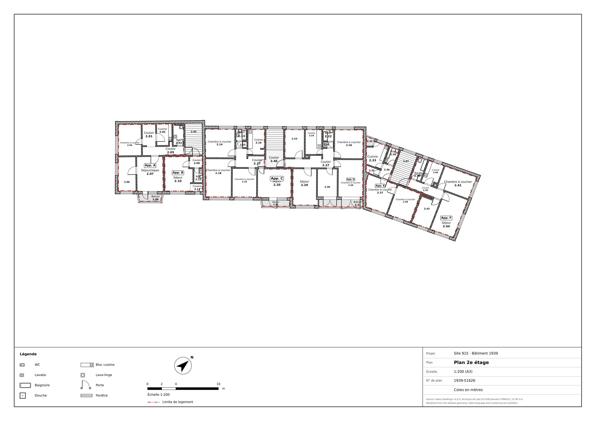
smart · needs_review · None count · reference 30 count · basis accepted_specialist_proposals · service-result.json | transcript.json | request-manifest.json
frontier · needs_review · None count · reference 30 count · basis accepted_specialist_proposals · service-result.json | transcript.json | request-manifest.json
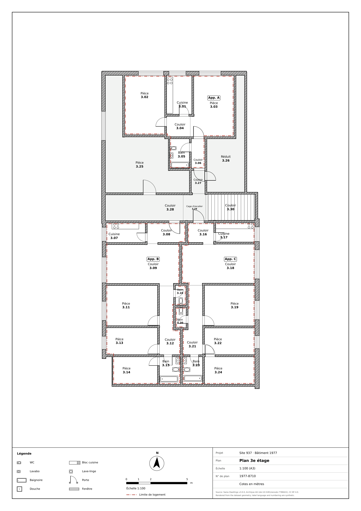
smart · answered · 5 count · reference 5 count · basis accepted_specialist_proposals · service-result.json | transcript.json | request-manifest.json
frontier · answered · 5 count · reference 5 count · basis accepted_specialist_proposals · service-result.json | transcript.json | request-manifest.json
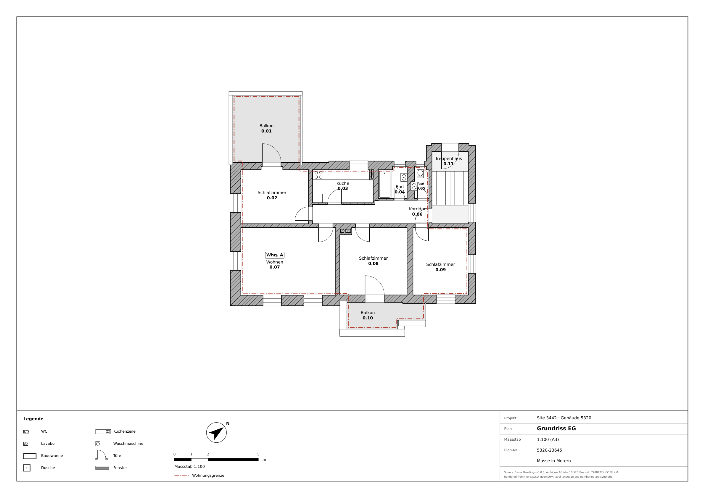
smart · answered · 2 count · reference 2 count · basis accepted_specialist_proposals · service-result.json | transcript.json | request-manifest.json
frontier · answered · 2 count · reference 2 count · basis accepted_specialist_proposals · service-result.json | transcript.json | request-manifest.json
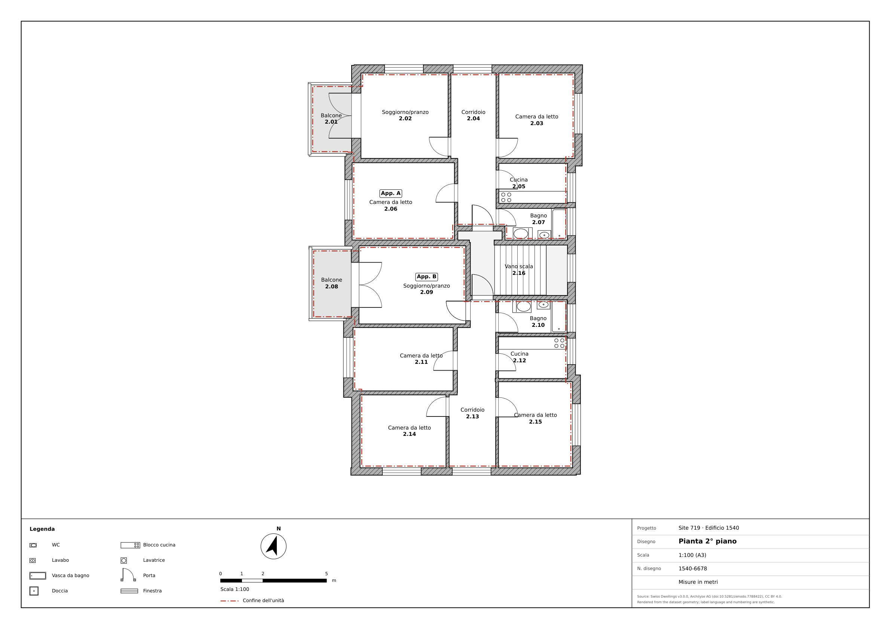
smart · answered · 2 count · reference 2 count · basis accepted_specialist_proposals · service-result.json | transcript.json | request-manifest.json
frontier · answered · 2 count · reference 2 count · basis accepted_specialist_proposals · service-result.json | transcript.json | request-manifest.json
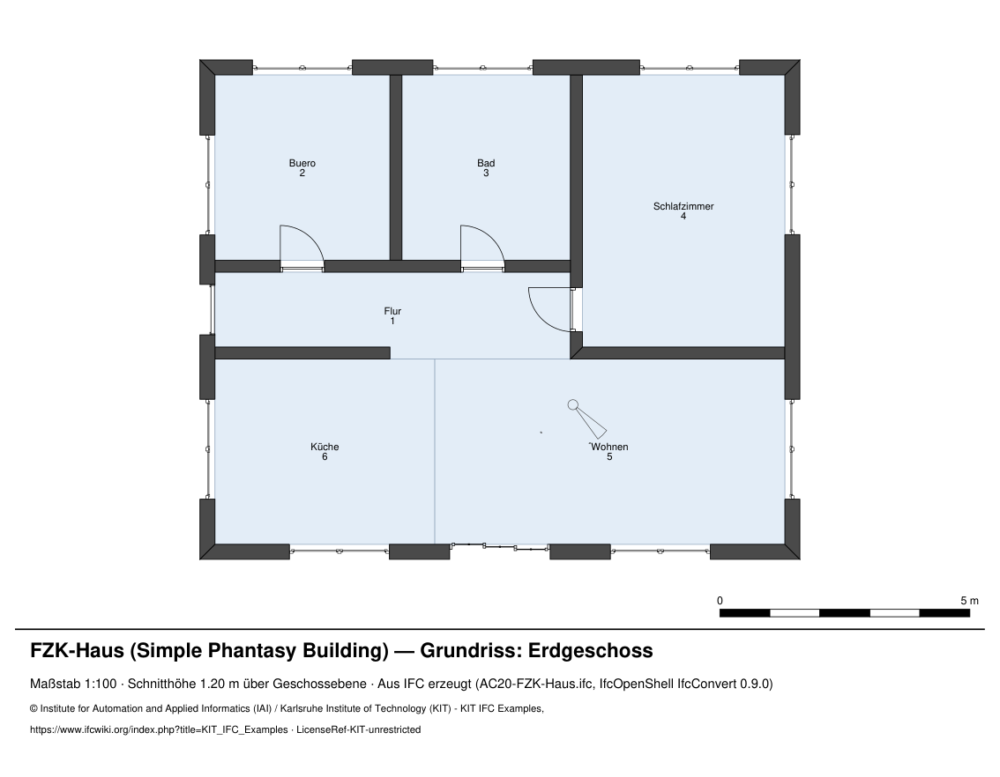
smart · answered · 39.302073 m3 · reference 39.28 m3 · basis computed_geometry · service-result.json | transcript.json | request-manifest.json
frontier · answered · 39.302073 m3 · reference 39.28 m3 · basis computed_geometry · service-result.json | transcript.json | request-manifest.json
smart · answered · 24.0 m3 · reference 24.0 m3 · basis computed_geometry · service-result.json | transcript.json | request-manifest.json
frontier · answered · 24.0 m3 · reference 24.0 m3 · basis computed_geometry · service-result.json | transcript.json | request-manifest.json
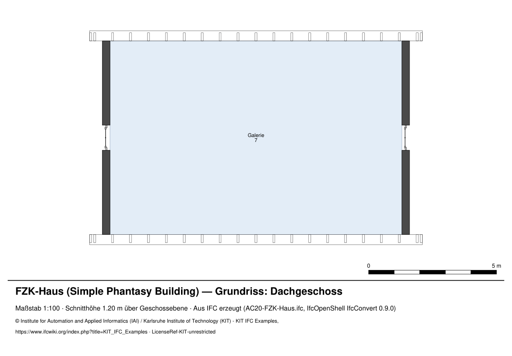
smart · answered · 15.20156574048838 m3 · reference 15.202 m3 · basis computed_geometry · service-result.json | transcript.json | request-manifest.json
frontier · answered · 15.20156574048838 m3 · reference 15.202 m3 · basis computed_geometry · service-result.json | transcript.json | request-manifest.json
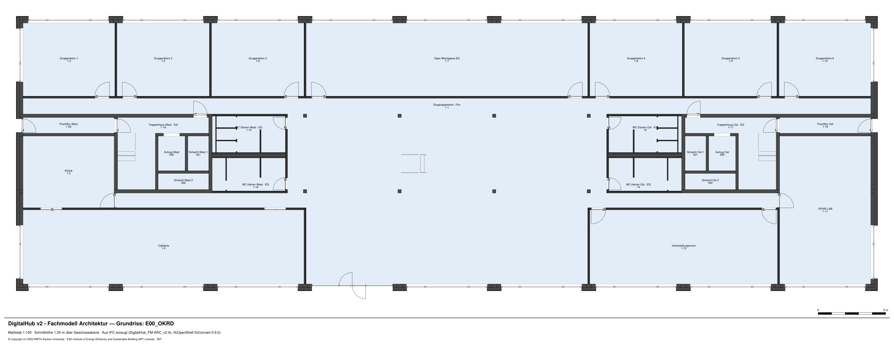
smart · answered · 543.7481584299456 m3 · reference 543.748 m3 · basis source_reported · service-result.json | transcript.json | request-manifest.json
frontier · answered · 543.7481584299456 m3 · reference 543.748 m3 · basis source_reported · service-result.json | transcript.json | request-manifest.json
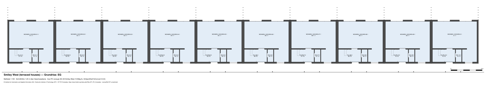
smart · answered · 104.63001763356789 m3 · reference 104.63 m3 · basis computed_geometry · service-result.json | transcript.json | request-manifest.json
frontier · answered · 104.63001763356789 m3 · reference 104.63 m3 · basis computed_geometry · service-result.json | transcript.json | request-manifest.json
smart · answered · 69.8 m · reference 66.86 m · basis computed_geometry · service-result.json | transcript.json | request-manifest.json
frontier · answered · 69.8 m · reference 66.86 m · basis computed_geometry · service-result.json | transcript.json | request-manifest.json
smart · answered · 44.0 m · reference 42.8 m · basis computed_geometry · service-result.json | transcript.json | request-manifest.json
frontier · answered · 44.0 m · reference 42.8 m · basis computed_geometry · service-result.json | transcript.json | request-manifest.json
smart · answered · 658.6504999999984 m · reference 664.43 m · basis computed_geometry · service-result.json | transcript.json | request-manifest.json
frontier · answered · 658.6504999999984 m · reference 664.43 m · basis computed_geometry · service-result.json | transcript.json | request-manifest.json
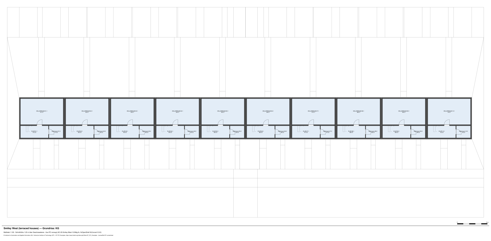
smart · answered · 384.55000004289997 m · reference 370.55 m · basis computed_geometry · service-result.json | transcript.json | request-manifest.json
frontier · answered · 384.55000004289997 m · reference 370.55 m · basis computed_geometry · service-result.json | transcript.json | request-manifest.json
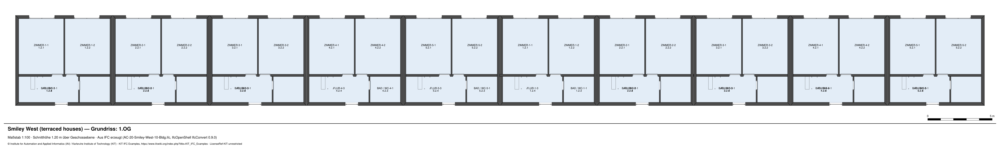
smart · answered · 434.90924077462 m · reference 415.734 m · basis computed_geometry · service-result.json | transcript.json | request-manifest.json
frontier · answered · 434.90924077462 m · reference 415.734 m · basis computed_geometry · service-result.json | transcript.json | request-manifest.json
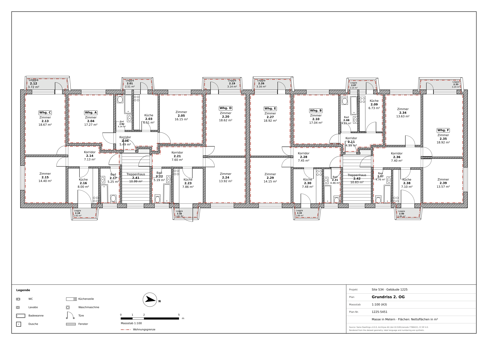
smart · needs_review · 11.827250287304798 m2 · reference 8.0 m2 · basis computed_geometry · service-result.json | transcript.json | request-manifest.json
frontier · needs_review · 7.790435296609819 m2 · reference 8.0 m2 · basis computed_geometry · service-result.json | transcript.json | request-manifest.json
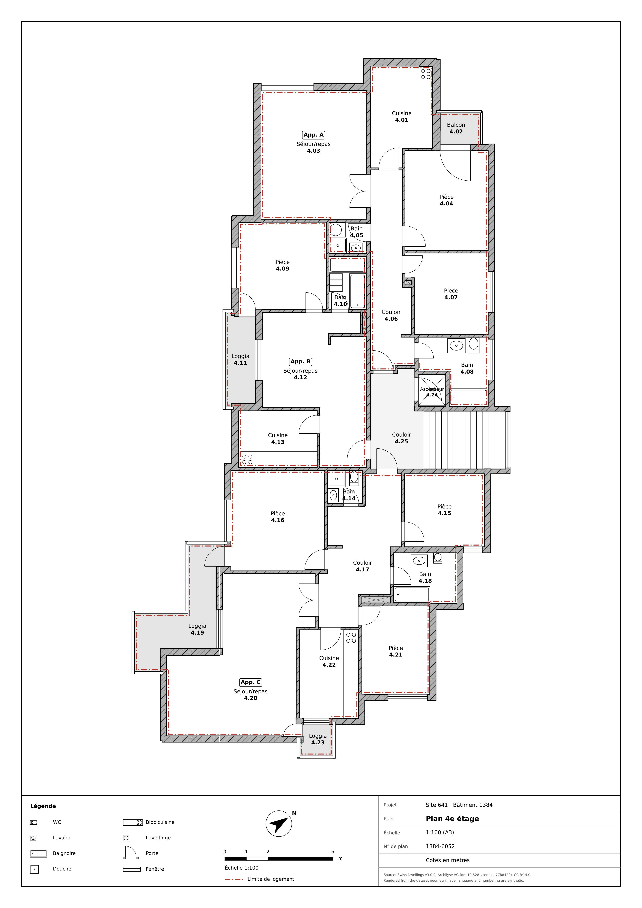
smart · answered · 12.672666546580535 m2 · reference 13.39 m2 · basis computed_geometry · service-result.json | transcript.json | request-manifest.json
frontier · needs_review · None None · reference 13.39 m2 · basis None · service-result.json | transcript.json | request-manifest.json
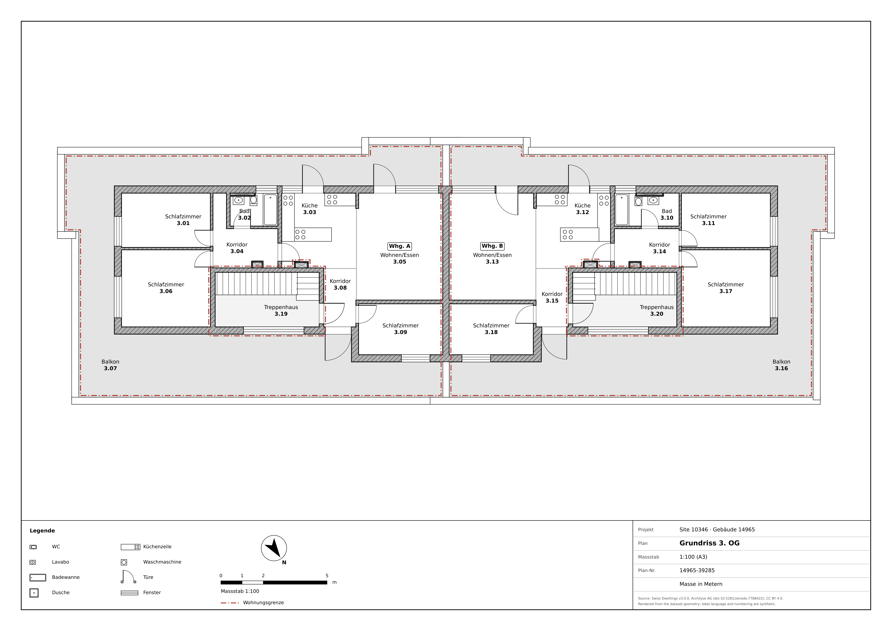
smart · answered · 20.858657060967207 m2 · reference 20.33 m2 · basis computed_geometry · service-result.json | transcript.json | request-manifest.json
frontier · needs_review · None None · reference 20.33 m2 · basis None · service-result.json | transcript.json | request-manifest.json
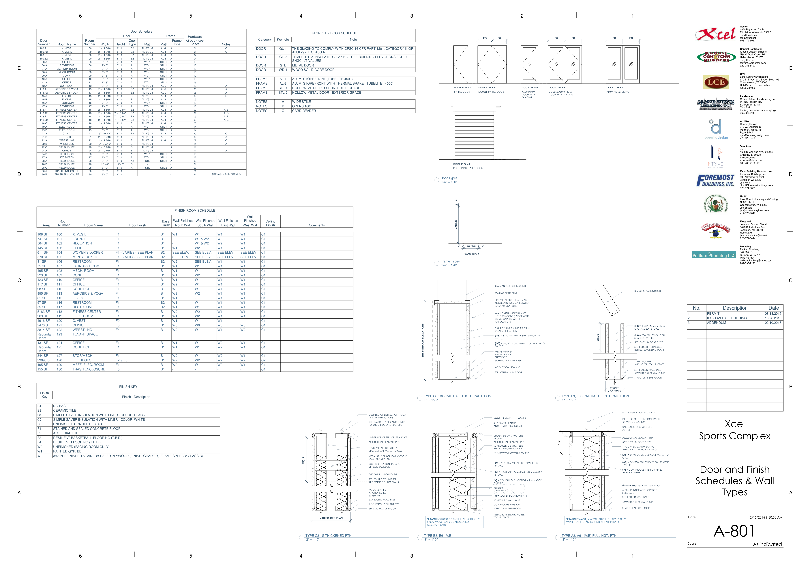
smart · answered · 29690 SF · reference 29690 ft2 · basis source_reading · service-result.json | transcript.json | request-manifest.json
frontier · answered · 29690 SF · reference 29690 ft2 · basis source_reading · service-result.json | transcript.json | request-manifest.json
smart · answered · 5183 SF · reference 5183 ft2 · basis source_reading · service-result.json | transcript.json | request-manifest.json
frontier · answered · 5183 SF · reference 5183 ft2 · basis source_reading · service-result.json | transcript.json | request-manifest.json